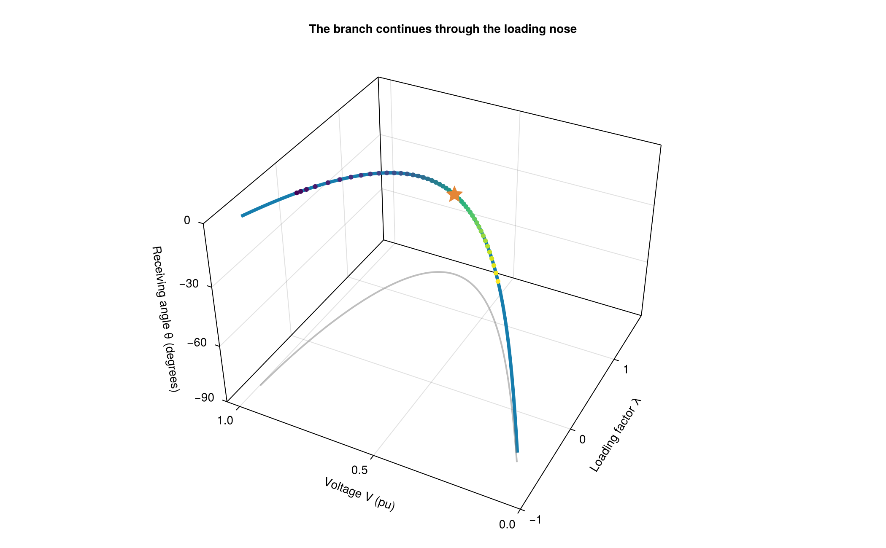
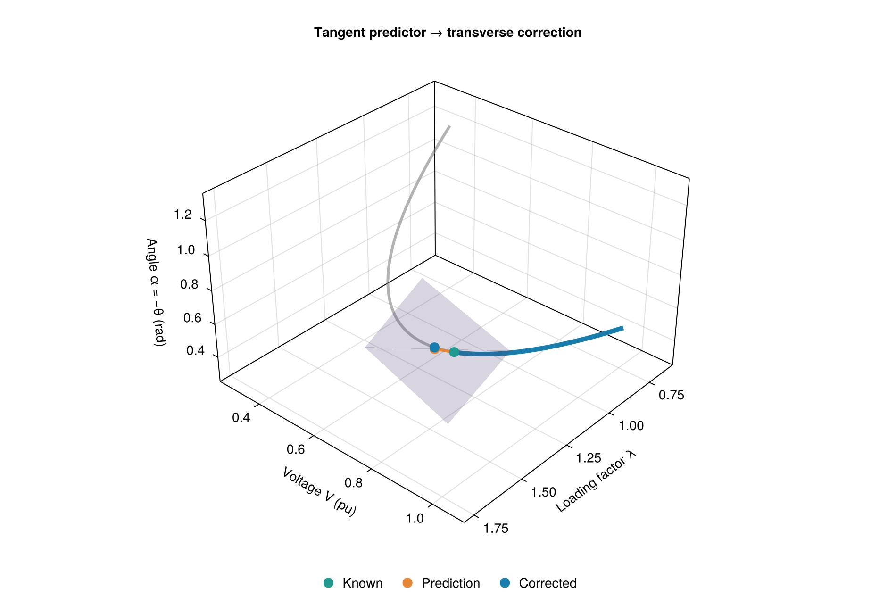
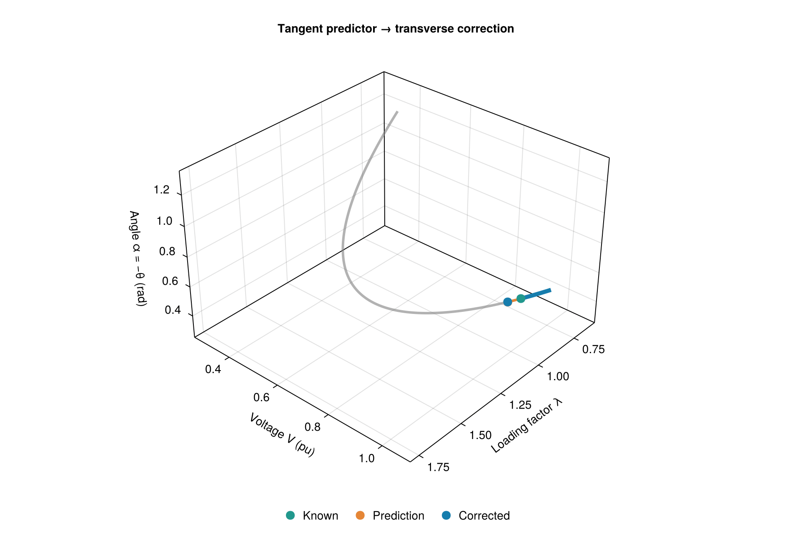
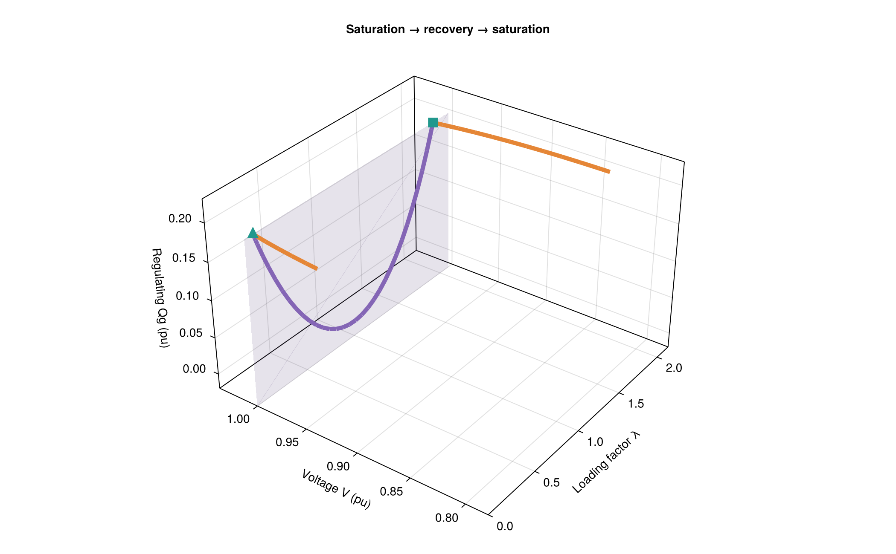
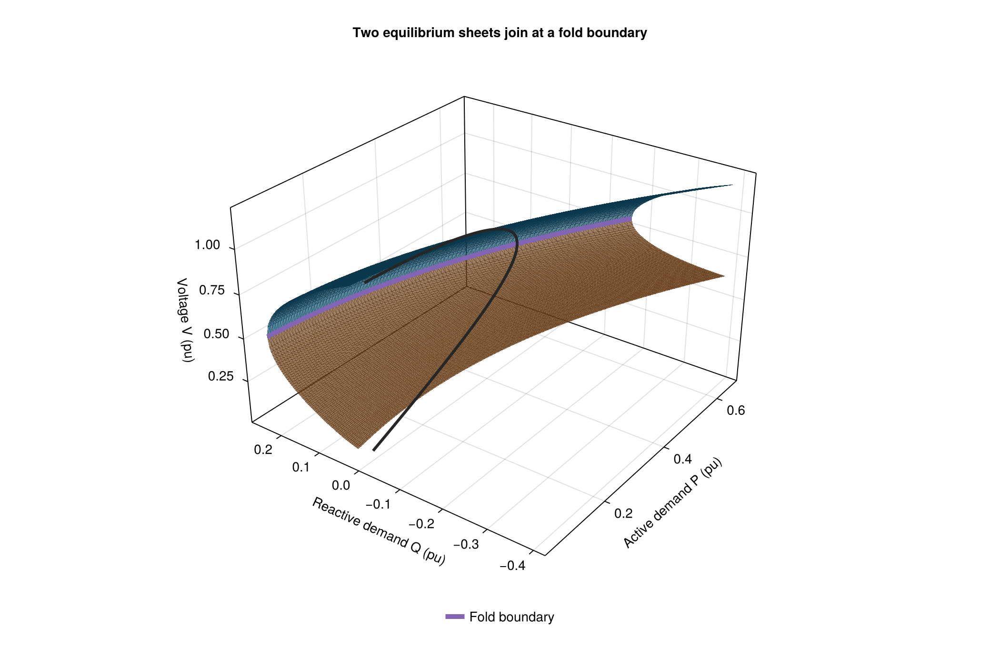

The geometry of continuation
Continuation is easiest to understand as a curve in state–parameter space, not a sequence of separate load-flow solves. This gallery complements the practical manual. Every figure is generated by executable Julia code during the documentation build; the animation is also reproducible.
We use a lossless two-bus circuit with reference voltage $E=1$ and line reactance $X=1$. The receiving-end angle is $\theta=-\alpha$. For positive active demand $P$ and signed reactive demand $Q$, its balance equations are
\[P=V\sin\alpha,\qquad Q=V\cos\alpha-V^2.\]
These demand signs differ from the positive net-injection convention of LoadingDirection. They give a convenient exact parameterization for checking and illustrating the numerical solutions.
using GradPower, CairoMakie, LinearAlgebra
CairoMakie.activate!()
include(joinpath(@__DIR__, "..", "..", "..", "examples", "continuation.jl"))
blue = colorant"#167DAD"
orange = colorant"#E58636"
purple = colorant"#8465B5"
teal = colorant"#21988D"Reactive-limited maximum: lambda = 2.3541019663994143
Bus 205 qmax at lambda = 1.999999996475331A fold is a projection, not the end of the curve
For $Q=0$, the positive-demand, positive-voltage portion of the branch has the parameterization $0<\alpha<\pi/2$:
\[V(\alpha)=\cos\alpha,\qquad P(\alpha)=\sin\alpha\cos\alpha,\qquad \lambda(\alpha)=\frac{P(\alpha)}{0.2}-1.\]
At $\alpha=\pi/4$, $d\lambda/d\alpha=0$, but the tangent to the full curve is not zero: voltage and angle still change. The state can no longer be expressed as a locally single-valued smooth function of λ, while arclength remains a valid local coordinate.
The colored points below come from runcpf; the continuous curve is analytic. The gray curve is its shadow on the voltage–loading plane. The star identifies the exact fold. The tracing order, not increasing λ, connects the solutions.
pq = continuation_example()
pq.buses[2].type = 1
empty!(pq.gens)
push!(pq.gens, Gen(1,"1",0.,0.,100.,true))
pqtrace = runcpf(pq; buses=[205], stop=:steps, max_steps=45)
alpha = range(0.06, 1.48; length=250)
lam = @. sin(alpha)*cos(alpha)/.2-1
voltage = cos.(alpha)
angles = -rad2deg.(alpha)
fig = Figure(size=(1050,650))
ax = Axis3(fig[1,1], xlabel="Loading factor λ", ylabel="Voltage V (pu)",
zlabel="Receiving angle θ (degrees)", title="The branch continues through the loading nose",
azimuth=1.15pi, elevation=.20pi, perspectiveness=.25)
lines!(ax,lam,voltage,angles; color=blue,linewidth=4)
lines!(ax,lam,voltage,fill(-90.,length(lam));color=(:gray50,.5),linewidth=2)
scatter!(ax,[p.lambda for p in pqtrace.points], [p.vm[1] for p in pqtrace.points],
[rad2deg(p.va[1]) for p in pqtrace.points];
color=collect(eachindex(pqtrace.points)),colormap=:viridis,markersize=8)
scatter!(ax,[1.5],[inv(sqrt(2))],[-45.];color=orange,marker=:star5,markersize=24)
xlims!(ax,-1.,1.7); ylims!(ax,0.,1.05); zlims!(ax,-90.,0.)
fig
The plots use degrees for readable axes. The solver uses radians and a size-normalized weighted arclength in the full state vector. Tilting or stretching a 3D plot does not change the solver's metric.
Tangent prediction and a transverse correction plane
Let $z=(\lambda,V,\alpha)$ for this illustration. At a known point $z_k$, a unit tangent $\tau_k$ predicts $z_{\rm pred}=z_k+\Delta s\,\tau_k$. The next equilibrium is the intersection of the curve with a plane through that prediction:
\[\tau_k^T(z-z_{\rm pred})=0.\]
This plane stays transverse to the curve near an ordinary fold, unlike the plane $\lambda=\mathrm{constant}$. Newton moves within that local section to the equilibrium curve. The animation shows: known point (teal), prediction (orange), next intersection (blue), and the translucent correction plane.
For clarity this construction uses Euclidean arclength in three displayed coordinates, not the full solver weighting. The curve and tangent are exact; a scalar root solve locates each curve–plane intersection. The orange dashed segment is the net correction, not a depiction of individual Newton iterations or solver diagnostics.
curve(a) = Point3f(sin(a)*cos(a)/.2-1, cos(a), a)
function tangent(a)
t = Vec3f(cos(2a)/.2, -sin(a), 1.)
return t/norm(t)
end
function corrected_angle(a, pred, t)
# The local root in the forward direction, not a fixed-lambda solve.
f(b) = dot(t, curve(b)-pred)
lo,hi = a,a+.25
@assert f(lo)<0 && f(hi)>0
for _ in 1:50
mid = (lo+hi)/2
if f(mid)>0
hi=mid
else
lo=mid
end
end
return (lo+hi)/2
end
function construction(a)
known = curve(a)
t = tangent(a)
pred = Point3f(known+.08t)
corrected = curve(corrected_angle(a,pred,t))
u = normalize(cross(t,Vec3f(0,0,1)))
v = cross(t,u)
corners = Point3f[Point3f(pred+.20s*u+.20r*v) for (s,r) in ((-1,-1),(1,-1),(1,1),(-1,1))]
@assert abs(dot(t,corrected-pred)) < 1e-6
return (;known,t,pred,corrected,corners)
end
function predictor_scene()
fig = Figure(size=(950,650))
ax = Axis3(fig[1,1], xlabel="Loading factor λ", ylabel="Voltage V (pu)",
zlabel="Angle α = −θ (rad)", title="Tangent predictor → transverse correction",
azimuth=.23pi, elevation=.18pi, perspectiveness=.2)
aa=range(.35,1.2;length=250)
lines!(ax,curve.(aa);color=(:gray50,.6),linewidth=3)
a=Observable(.63)
data=lift(construction,a)
trail=lift(t -> curve.(range(.35,t;length=120)),a)
lines!(ax,trail;color=blue,linewidth=5)
patch=lift(d -> d.corners,data)
mesh!(ax,patch,[1 2 3; 1 3 4];color=(purple,.22),transparency=true)
lines!(ax,lift(d -> Point3f[d.known,d.pred],data);color=orange,linewidth=3)
lines!(ax,lift(d -> Point3f[d.pred,d.corrected],data);color=orange,linewidth=3,linestyle=:dash)
for (field,color,label) in ((:known,teal,"Known"),(:pred,orange,"Prediction"),
(:corrected,blue,"Corrected"))
scatter!(ax,lift(d -> [getproperty(d,field)],data);color,markersize=15,label)
end
xlims!(ax,.6,1.8); ylims!(ax,.25,1.1); zlims!(ax,.25,1.35)
Legend(fig[2,1],ax;orientation=:horizontal,framevisible=false)
return fig,a
end
predictor_fig,predictor_alpha=predictor_scene()
predictor_fig
record(predictor_fig,"cpf_geometry.gif",range(.40,1.07;length=60);framerate=15) do a
predictor_alpha[]=a
end
Reactive limits turn the equilibrium curve into joined smooth pieces
Adding regulated $Q_g$ does not mean repeatedly adding and removing unknowns. The exact complementarity equation keeps a fixed-size system and allows the curve to switch between smooth control regimes:
For distinct bounds $l<u$:
- Voltage regulation: $V=V_s$ and $l<Q_g<u$.
- Upper saturation: $Q_g=u$ and $V\le V_s$.
- Lower saturation: $Q_g=l$ and $V\ge V_s$.
Equal bounds instead impose fixed Q without a voltage inequality. At a transition between regulation and saturation, both constraints hold.
The next figure displays an actual computed trace in $(\lambda,V,Q_g)$. Demand decreases from an initially saturated point, voltage control recovers, and Qmax is reached again as active power reverses. The violet sheet is the voltage-regulating constraint, and the amber sheet is the upper-Q constraint. They are control constraints, not equilibrium surfaces: the power balances pick out a one-dimensional curve on them.
recovery_ps=continuation_example()
recovery_ps.loads[1].pd=.65
recovery_direction=LoadingDirection(recovery_ps;dp=[0.,.65])
recovery_trace=runcpf(recovery_ps,recovery_direction;buses=[205])
fig=Figure(size=(1050,650))
ax=Axis3(fig[1,1],xlabel="Loading factor λ",ylabel="Voltage V (pu)",
zlabel="Regulating Qg (pu)",title="Saturation → recovery → saturation",
azimuth=1.2pi,elevation=.18pi,perspectiveness=.2)
ll=range(0,2.1;length=2)
qq=range(-.02,.2;length=2)
surface!(ax,[l for l in ll,q in qq],fill(1.,2,2),[q for l in ll,q in qq];
color=fill(purple,2,2),alpha=.15,transparency=true)
vv=range(.78,1.;length=2)
surface!(ax,[l for l in ll,v in vv],[v for l in ll,v in vv],fill(.2,2,2);
color=fill(orange,2,2),alpha=.15,transparency=true)
for mode in (:voltage,:qmax)
# Separate consecutive segments, preserving their event endpoints.
color=mode === :voltage ? purple : orange
for i in 1:length(recovery_trace.points)-1
p,q=recovery_trace.points[i:i+1]
p.control[1] == mode || continue
lines!(ax,[p.lambda,q.lambda],[p.vm[1],q.vm[1]],[p.qg[1],q.qg[1]];
color,linewidth=5)
end
end
for e in recovery_trace.events
p=e.point
scatter!(ax,[p.lambda],[p.vm[1]],[p.qg[1]];color=teal,
marker=e.kind === :recovery ? :utriangle : :rect,markersize=18)
end
xlims!(ax,0,2.15);ylims!(ax,.78,1.04);zlims!(ax,-.02,.23)
fig
A visible corner does not by itself prove a loading maximum. The sign of λ's feasible one-sided derivatives determines whether the control exchange merely changes regulation or actually reverses the loading direction. See the manual's limit-induced example.
Two independent demands: an equilibrium surface and its boundary
For the same line, now allow both active demand $P$ and reactive demand $Q$ to vary independently. These are signed demands: negative Q denotes net reactive injection. Eliminating the angle gives a quadratic in $U=V^2$:
\[U^2+(2Q-1)U+(P^2+Q^2)=0,\qquad U_\pm=\frac{1-2Q\pm\sqrt{1-4Q-4P^2}}{2}.\]
The discriminant $D=1-4Q-4P^2$ defines a fold boundary:
\[D=0,\qquad Q_*(P)=\tfrac14-P^2,\qquad V_*(P)=\sqrt{\tfrac14+P^2}.\]
Only real roots with $U>0$ represent nonzero-voltage equilibria. The plotted domain satisfies this condition on both sheets; a nonnegative discriminant alone is not a universal substitute for checking voltage feasibility.
The blue and amber sheets below are the high- and low-voltage equilibria. Their seam is the fold boundary. A chosen loading direction cuts these sheets along a curve—the one-parameter problem solved by runcpf.
This closed-form surface is special to the lossless two-bus circuit with specified P/Q demand and no regulating generator. It is not computed by a new solver capability. Real networks require additional continuation or repeated directional studies to explore multidimensional loadability.
pp=range(.05,.65;length=100)
# Parameter r measures distance below the curved fold boundary. This keeps
# every mesh column feasible and makes the seam visible without NaN holes.
rr=range(0,.22;length=65)
P=[p for p in pp,r in rr]
Q=[.25-p^2-r for p in pp,r in rr]
D=@. 1-4Q-4P^2
Uplus=@. (1-2Q+sqrt(max(D,0)))/2
Uminus=@. (1-2Q-sqrt(max(D,0)))/2
@assert minimum(Uminus)>0
@assert maximum(abs.(@. Uplus^2+(2Q-1)*Uplus+P^2+Q^2))<1e-12
@assert maximum(abs.(@. Uminus^2+(2Q-1)*Uminus+P^2+Q^2))<1e-12
# Recover the angle and check the original balances, not just the eliminated polynomial.
for U in (Uplus,Uminus)
V=sqrt.(U)
a=atan.(P,Q.+U)
@assert maximum(abs.(V.*sin.(a).-P))<1e-12
@assert maximum(abs.(V.*cos.(a).-U.-Q))<1e-12
end
fig=Figure(size=(1050,680))
ax=Axis3(fig[1,1],xlabel="Active demand P (pu)",ylabel="Reactive demand Q (pu)",
zlabel="Voltage V (pu)",title="Two equilibrium sheets join at a fold boundary",
azimuth=1.2pi,elevation=.16pi,perspectiveness=.25)
surface!(ax,P,Q,sqrt.(max.(Uplus,0));color=fill(blue,size(P)),alpha=.65,transparency=true)
surface!(ax,P,Q,sqrt.(max.(Uminus,0));color=fill(orange,size(P)),alpha=.65,transparency=true)
lines!(ax,pp,.25 .-pp.^2,sqrt.(.25 .+pp.^2);color=purple,linewidth=5,label="Fold boundary")
# A constant-Q loading slice, independently computed from its exact roots.
sliceP=range(.06,.5;length=160)
sliceD=sqrt.(max.(1 .-4sliceP.^2,0))
for sign in (1,-1)
lines!(ax,sliceP,zeros(length(sliceP)),sqrt.((1 .+sign.*sliceD)./2);
color=:gray15,linewidth=3)
end
Legend(fig[2,1],ax;orientation=:horizontal,framevisible=false)
fig
The absence of an equilibrium beyond this idealized boundary says nothing about which dynamic mechanism, protection action, or operational limit a real system encounters first. Geometry helps interpret a specified mathematical model; it does not replace those missing models.